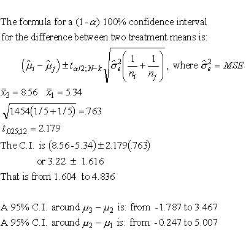

|
7.
Product and Process Comparisons
7.4. Comparisons based on data from more than two processes 7.4.2. Are the means equal?
|
|||
| Confidence
intervals can easily be put around the difference between two means
|
This page shows how to construct
a confidence interval
around (mi - mj) for the one-way ANOVA by continuing an example shown on a previous page.  Later on the topic of estimating more general linear combinations of means (primarily contrasts) will be discussed, including how to put confidence bounds around contrasts. |
||